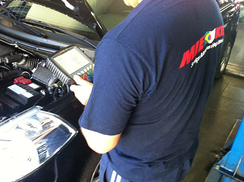

Uma oficina que cresceu no mesmo endereço, investindo em equipamento e gente treinada — não em mudar de bairro atrás de fachada nova.
Nossa história
Fundada em 1998, sem trocar de endereço até hoje
1998 — fundaçãoA MIEKEN Serviços Automotivos nasceu com o objetivo de prestar serviço de alta qualidade, eficiência e atendimento de verdade ao cliente.
Crescimento no mesmo lugarInvestimento em empreendedorismo e visão comercial pra crescer junto com a demanda do mercado — atuando sempre no mesmo endereço, com reformas ao longo do tempo pra manter segurança e conforto de equipe e clientes.
Equipamento de última geraçãoInvestimento em equipamento de diagnóstico de alta tecnologia pra atender todas as marcas do mercado, nacionais e importadas.
Equipe sempre treinadaCursos e capacitação constante pra equipe acompanhar o que muda no automóvel moderno e se manter na liderança do mercado automotivo local.
A oficina
Estrutura própria, do jeito que carro sério precisa.

Diagnóstico de verdade
Equipamento profissional, não achismo.
Antes de trocar peça, a gente escaneia. Isso significa reparo mais preciso e menos peça trocada à toa.
✓Scanner Rasther II/III e Launch — leitura completa dos módulos do carro
✓Analisador de gases — pré-inspeção veicular
✓Ferramenta de enquadramento de motor — ajuste de precisão
✓Equalizador de bicos injetores — limpeza e qualidade
Quer conhecer a oficina de perto?
Ligue, marque um horário ou passe direto no Jardim Tremembé.